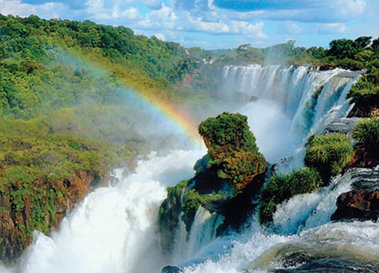
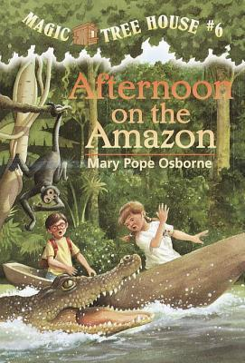
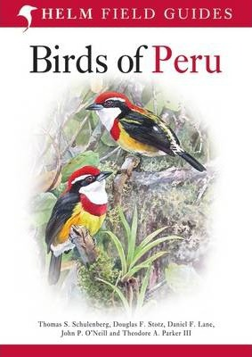

Travel to live, Live to Travel
Travel to live, Live to Travel

South America is a continent in the Western Hemisphere, mostly in the Southern Hemisphere, with a relatively small portion in the Northern Hemisphere. It may also be considered a subcontinent of the Americas,[5][6] which is how it is viewed in the Spanish and Portuguese-speaking regions of the Americas. The reference to South America instead of other regions (like Latin America or the Southern Cone) has
increased in the last decades due to changing geopolitical
dynamics (in particular, the rise of Brazil)
.
Accomendation-There are ample cheap private rooms to be found in Ecuador, and often the price difference between a dorm bed and a basic private is minimal. Basic private rooms cost between $10 and $15.
Transportation- Peru and Colombia were moderate at $40 - $45 per person, per day, the cost of transportation was the largest expense often costing $40 - $60 each for an overnight bus - quite a shock after Ecuador and Bolivia.
Food-Probably the among the best you will find anywhere but an excellent 2 or 3 course set lunch in a good restaurant should set you back no more than maybe 40 pesos to 80 pesos ($3 or €2).
| Whole Earth Field Guide A source book for American culture in the 1960s and 1970s: "suggested reading" from the Last Whole Earth Catalog, from Thoreau to James Baldwin.The Whole Earth Catalog was a cultural touchstone of the 1960s and 1970s. |  | Magic Tree House 06 : Afternoon On The Amazon Jack and Annie travel back in time to a South American rain forest in search of the elusive magician Morgan le Fay. Will they find a new clue to her whereabouts before they are trampled by stampeding killer ants? | |
| Portuguese For Dummies The fast and easy way to learn to speak Brazilian Portuguese Quick! What's the most widely spoken language in South America? That's right, Portuguese! And what's the fastest, easiest, most enjoyable way to learn Portuguese? Portuguese for Dummies, of course! This fun, friendly guide helps you start speaking Brazilian Portuguese immediately! |  | Birds of Peru With over 1800 species, Peru has the second richest avifauna of any country in the world. As a consequence it is one of the most popular birding destinations in South America. This will be the first comprehensive and fully illustrated field guide to the birds of Peru. Text is arranged opposite the plates, in conventional field guide manner. |